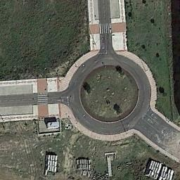
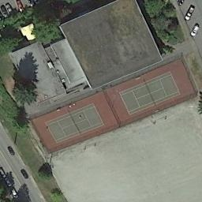
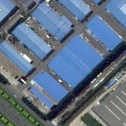
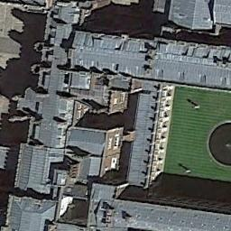
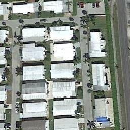
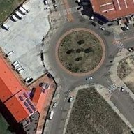
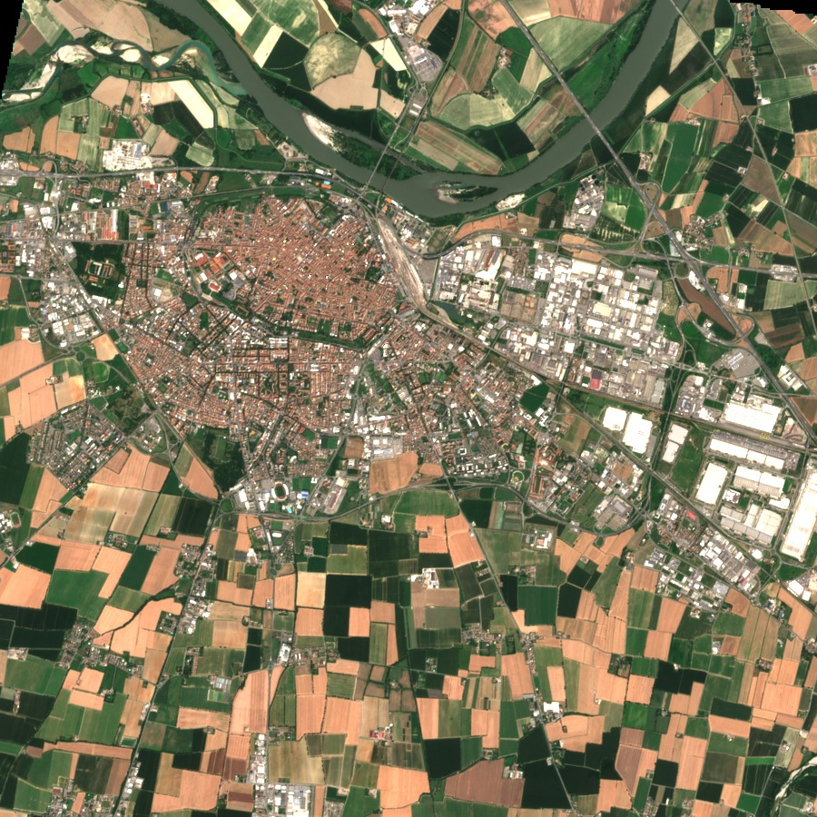

Random
Roll a die for every channel. It costs nothing, so any score has to beat it to be worth computing.
the baseline4th CV4EO workshop at WACV 2027 · double-blind review
A small satellite meets a kind of place it was never trained on: a roundabout, a wetland, a field of storage tanks. It gets five labelled photos and very little compute. To fit the computer, somebody has to shrink the network first. Which channels do they throw away?
We compared eight ways of choosing, on aerial scenes, 13-band Sentinel-2 patches and leaf photographs, and we always tested on classes the network had never seen.
Anonymous for now. Authors, the paper and the code are linked here after the decision.





Everything is 5-way 5-shot accuracy on classes held out from training, in percentage points, paired over ten class partitions unless a row says otherwise. RESISC45 aerial scenes except where noted. The symbols repeat in the figures: ▲ clearly ahead of random choice, ● cannot be told apart, ▼ clearly behind.
Inside a ResNet-18 sit eight residual blocks. Each starts with a convolution that has 64 to 512 output channels, 1,920 in all. Those are the channels we prune. The stem, the shortcuts and the block outputs stay as they are, so no index has to line up across a residual addition.
Every method follows the same depth rule: deeper blocks keep a smaller share, because that is where most of the weights live. Two scores therefore differ in one thing only, which channels they keep. After each cut the network trains briefly on the training classes to recover.
Here is what four scores kept in one block of one trained network: partition 0, a single cut to 30%, each tick a channel. They look nothing alike.
We used eight scores built from five ideas. Four are standard. The fifth, DACIS, is a class-aware candidate that combines three statistics, and we also ran each of those three alone.
Roll a die for every channel. It costs nothing, so any score has to beat it to be worth computing.
the baselineAdd up the absolute weights of a channel's filter. A filter with small weights has little to say, so it goes first.
Li et al., ICLR 2017Every channel is followed by a learned multiplier, γ. A small γ is a quiet channel. We read it off the pretrained network, without the sparsity penalty of the original.
Liu et al., ICCV 2017Estimate with one gradient how much the loss would change if the channel vanished. The channels the loss would barely notice go first.
Molchanov et al., ICLR 2017Rank each channel three ways: the size of its filter's gradient (G), how much its activation varies (V), and how well it separates the classes (D, a Fisher ratio). Mix the ranks 0.3, 0.2, 0.5. We fixed those weights before running anything.
a class-aware candidateAll scores are computed from a calibration set of 40 images per training class. No score ever sees a held-out class.
Taylor_c = mean over images of | sum over x,y of a_c(x,y) · dL/da_c(x,y) |
a_c: post-ReLU activation of the channel
L: cross-entropy of a cosine nearest-prototype classifier whose
prototypes are the calibration class means (temperature 10)
DACIS_c = 0.3 · r(G_c) + 0.2 · r(V_c) + 0.5 · r(D_c)
r(): rank inside the block, scaled to [0, 1]
G_c: mean l2 norm of dL/dW_c over calibration batches of 64 images
V_c: variance across images of the spatially pooled activation
D_c: sum_k n_k (mu_kc - mu_c)^2 / sum_k sum_{i in k} (a_ic - mu_kc)^2
Most pruning papers score a network on the classes it was trained for. A mission does not get that luxury: the classes that matter change, and labels for a new one are few. So the test here is built on classes the network has never seen, and everything else is arranged around that.
A seed fixes a random split of the scene types. For RESISC45, 25 classes train the network, 5 are kept for validation checks and 15 are the test. We repeated the whole study on 10 such partitions for the aerial and Sentinel-2 sets and on 5 for the leaf photographs.
A test episode picks 5 of the held-out classes and hands the network 5 labelled photos of each, the support set. Then it shows 15 further photos per class, the queries, and asks which class each one belongs to. The network turns every photo into an embedding, averages each class's five into a prototype, and names the nearest prototype by cosine similarity. We run 2,000 such episodes in every partition, at 1, 5 and 10 shots. The headline numbers use 5.

Leaf photographs make a ground-level control. They lack geospatial context, but the one learning rate we tuned was picked on PlantVillage, single leaves on a plain background in 38 classes, and the DACIS ablations run on it. PlantDoc, internet photographs with cluttered scenes, is the shift check: no PlantDoc image is used for training or pruning. The two share some concepts, so it is a field-image test and not a strict novel-class one.
The 2,000 episodes are drawn once for each dataset, partition and shot count, and every method answers the same ones. That makes the comparison paired. For each partition we subtract one method's accuracy from another's, average the differences over partitions and put a 95% t-interval around the mean. Partitions are the replicates, not episodes, because episodes from one trained network are not independent draws of the training run.
The sampling error of 2,000 episodes is at most 0.2 points. The spread between partitions is far larger, so that is what a small difference has to be measured against.
At 30% of the parameters, barely. Random choice sits inside the pack, and the class partition you happen to draw moves accuracy by more than any score does.
Now subtract random choice from each score, partition by partition. Only Taylor clears zero. Of the 28 comparisons of a computed score with random choice that we made, two favoured the computed score and two favoured random choice; about 1.4 would be expected by chance. Only the Taylor lead on RESISC45 survives a Bonferroni correction (adjusted p = 0.005). DACIS cannot be told from random choice in any of the eight setting and schedule pairs.
The Taylor lead grows with the severity of the cut. On RESISC45 it is +0.6, +1.4, +2.5 and +6.0 points at 50, 30, 20 and 10% of the ResNet-18, and +0.8, +4.2 and +6.5 at 60, 40 and 25% of the MobileNetV2. BatchNorm scale goes the other way: kept to 25%, the MobileNetV2 falls 8.3 points behind random choice. These runs cannot tell whether the architecture or the severity does the work.
At 30% Taylor's lead is a point or two. Look at it partition by partition and it is ahead every single time in the three settings below. Where the cut is gentle it slips: at 60% of the MobileNetV2 it is ahead in 8 of 10. Kendall's W across partitions is 0.67 on RESISC45 (p < 0.001): Taylor is usually first, and BatchNorm scale and Fisher usually last.
The schedule we tested, PMP, prunes to 60%, recovers, runs 1,000 episodes of prototypical meta-training, prunes again to the target budget, and recovers once more. While the episodes run we also collect, for every channel, the gradient norm of its filter. The second cut uses it in the DACIS score.
Fig. IThe PMP schedule. Hatched boxes cut channels. The dashed line is the meta-gradient statistic that M hands to the second cut.
On the unpruned network the episodic stage changed 5-shot accuracy by −0.3 points on RESISC45 (interval −0.4 to −0.1) and −0.8 on EuroSAT-MS. At 1 shot it gained 0.6. Once the network is pruned, PMP gains 0.9 over plain prune-and-recover on RESISC45. So does meta-training before the cut (0.9). So does a probe that collects the gradient statistic and never updates a single weight (1.2). Meta-training after the cut gains nothing (0.0).
The schedules that gain are the ones whose score uses the meta-gradient term, and that lifts DACIS only to the level of random choice. This holds for our recipe: frozen BatchNorm statistics, 1,000 episodes, 5-way 5-shot, one learning rate.
Pruning is supposed to buy speed. We counted multiply-accumulates exactly and timed the networks on a CPU.
At 30% of the parameters the ResNet-18 needs 0.251 G multiply-accumulates against 0.592 G for the dense network, 58% fewer. Its CPU latency is only 39% lower. We did not profile layer by layer, so the gap is unexplained. The untouched stem, shortcuts and residual widths, or memory traffic and call overhead at batch size one, are the candidates.
Then we put in a network nobody had pruned. MobileNetV3-Small has 0.93 M parameters and needs 0.018 G multiply-accumulates, about 32 times fewer than the dense ResNet-18. It runs in 8.8 ms on the laptop CPU against 40.6 ms. On RESISC45 it scores 88.1% against 87.2% for the dense ResNet-18, and on EuroSAT-MS 74.7% against 64.7%.
It beat every pruned network we built on all three novel-class sets. EfficientNet-B0 scored higher still on RESISC45 and PlantVillage. PlantDoc, photographs taken in the field, is the exception: a ResNet-18 kept at 50% is 1.6 points ahead of MobileNetV3-Small there.
EuroSAT-MS patches carry all 13 Sentinel-2 bands, from coastal blue to shortwave infrared. We let the ResNet-18 see all of them by repeating its ImageNet first-layer filters over the bands and scaling them by 3/13. The control sees only the three visible bands through the unmodified filters.
The case for thirteen bands is physical. Water turns dark once you leave the visible bands. Healthy crops jump between red and near infrared. Bare soil climbs steadily, and a white roof stays bright everywhere. The picture below is one real Sentinel-2 scene at full 10 m resolution. Each pin marks a spot, and its curve shows what that spot reflects in every band.

The same twelve bands, as pictures. The visible ones show roughly what an eye would see. Past red the river goes black and living crops turn bright, and shortwave infrared separates damp ground from dry.
On the five partitions that have both inputs, the dense network scored 62.1% with 13 bands and 68.7% with the three visible ones, a difference of −6.6 points with a 95% interval of −17.4 to +4.2. The 13-band input was ahead in 2 of the 5 partitions.
That is a statement about a naive first layer, and the answer depends on how the filters were initialised. It does not show that multispectral data is unhelpful.
Before pruning anything for few-shot classification of optical patches, test MobileNetV3-Small. It needed no pruning at all, and it beat everything we pruned.
Taylor was the only score that beat random choice, and in the three settings we checked one partition at a time it was ahead in all ten. The meta stage did not raise 5-shot accuracy.
Single EuroSAT-MS partitions of the unpruned network range from 54.0% to 71.2%. One partition can hide any difference between scores, or invent one.
Five to ten partitions are still few. The paired intervals have a mean half-width of 0.6 points on RESISC45 and 2.1, 2.1 and 1.5 on EuroSAT-MS, PlantVillage and PlantDoc, so "indistinguishable" means not distinguishable at that width. It does not mean equal.
Not tested, so nothing on this page speaks to them:
This is a benchmarking study on Earth-observation data. It is not a geospatial method.
Every number on this page comes from saved runs, and two notebooks retrain everything and rebuild every table, figure and PDF. Press Run all, wait, then press Results for a zip of every run.
The paper, the code, the notebooks and the author list are withheld while the paper is under double-blind review. They appear here once it is decided.
[Add after review: author list and affiliations.]